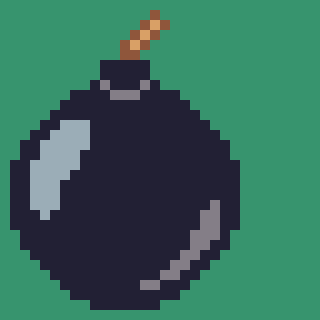

Crie uma página web que contenha um alarme no qual o usuário pode definir os minutos (máximo 59 minutos) e segundos e clica em um botão que inicia uma contagem regressiva, considerando os seguintes critérios:
- utilizar um <select> para seleção dos minutos e segundos
- criar um botão que inicia a contagem regressiva que ao ser clicado se torne um botão de desarmar o alarme ○ o contador regressivo deve mostrar o tempo restante a cada segundo
- quando faltar menos de 5% do tempo inicial, mude a interface de contagem para informar que o tempo está acabando (use algo que chame a atenção do usuário)
- ao término da contagem, o tempo deve parar de ser decrementado e deve-se disparar um alarme (som de alarme) informando que o tempo acabou
- se o usuário clicar no botão de desarmar alarme, a contagem deve ser parada e, caso o alarme esteja tocando, o som deve parar, transformando o botão para que possa armar o alarme novamente
